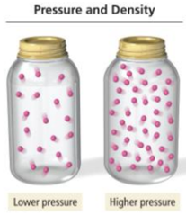
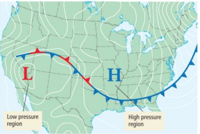
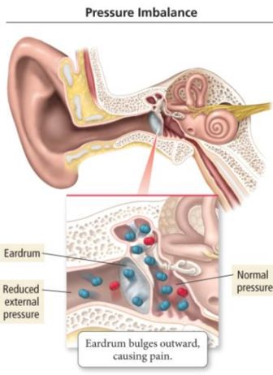
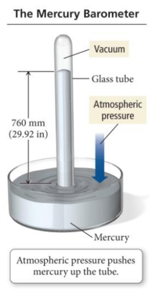
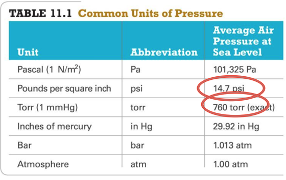
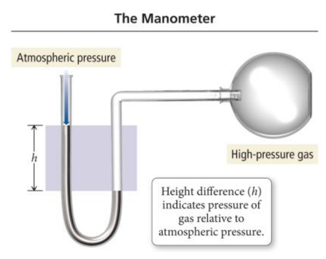
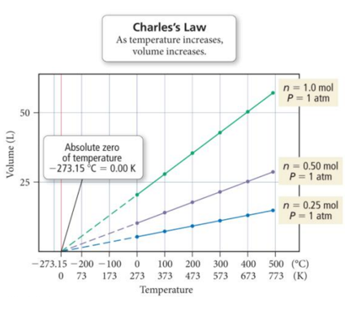

Week 15 - Day 1 (Start Ch 11)
- Audio 0:00:59.904181
- 2 - 4:30 saturday and sunday after next
- review sessions in shelby hall
Clicker 1
- Audio 0:02:40.435200
-
How much energy is evolved during the formation of 197 g of Fe according to the reaction below? (Fe: 55.85) Fe2O3(s)+2Al(s)->Al2O3(s)+2Fe(s) delta H rxn = -852kJ
- A) 1.52*10^3 kJ
- B) 3.02*10^3 kJ
- C) 8.40*10^3 kJ
- D) 964 kJ
- E) 482 kJ
Gas Pressure
- Audio 0:07:39.758980
- Gas pressure is a result of the constant movement of the gas molecules and their collisions with the surfaces around them.
- The pressure of a gas depends on several factors:
- Number of gas particles in a given volume
- Volume of the container
- Average speed of the gas particles
- Mass of the gas particles
Gas Pressure
- The total pressure exerted by a gas depends on frequency of collisions & momentum change during a collision:
- Number of gas particles in a given volume
- The fewer the gas particles, the lower the force per unit area and the lower the pressure.
- A low density of gas particles results in low pressure. A high density of gas particles results in high pressure.
- As volume increases, concentration of gas molecules decreases (number of molecules does not change, but since the volume increases, the concentration goes down).
- This, in turn, results in fewer molecular collisions, which results in lower pressure.
- The fewer the gas particles, the lower the force per unit area and the lower the pressure.
- Momentum of individual molecules
- speed and mass of molecules
- Temperature
- speed and mass of molecules
- 
Atmospheric Pressure Effects
- Audio 0:10:36.762960
- Variation in pressure in Earthʼ s atmosphere creates wind, and changes in pressure help us to predict weather.
- The H in this map indicates regions of high pressure, usually associated with clear weather.
- The L indicates regions of low pressure, usually associated with unstable weather.
- The number of gas particles in a given volume decreases with increasing altitude.
- Hence, pressure decreases with increasing altitude.
- 
Pressure Imbalance in the Ear
- Audio 0:11:41.834490
- If there is a difference in pressure across the eardrum membrane, the membrane will be pushed out.
- The result is what we commonly call a “popped eardrum.”
- 
Pressure Units
- Audio 0:13:12.088425
- Common units of pressure:
- Millimeter of mercury (Hg)
- mmHg
- Torr
- Same as millimeter of mercury
- Atmosphere (atm)
- Conversion between pressure units:
- 1 mmHg = 1 torr
- 760 mmHg = 1 atm
- 760 torr = 1 atm
- 
A Table of Pressure Units
- Audio 0:17:58.486884
- 
The Manometer
- Audio 0:18:10.818952
- The pressure of a gas trapped in a container can be measured with an instrument called a manometer.
- Manometers are U-shaped tubes partially filled with a liquid that are connected to the gas sample on one side and open to the air on the other.
- A competition is established between the pressures of the atmosphere and the gas.
- The difference in the liquid levels is a measure of the difference in pressure between the gas and the atmosphere.
- For this sample, the gas pressure is greater than atmospheric pressure; the mercury level on the left side of the tube is higher than the level on the right.
- 
Basic Properties of Gases
- Audio 0:20:54.286850
- There are four basic properties of a gas:
- Pressure (P)
- Units in atmosphere (atm)
- Volume (V)
- Units in liters (L)
- Temperature (T)
- Units in Kelvin (K)
- Where Kelvin (K) = Celsius T + 273
- Units in Kelvin (K)
- Amount in moles (n)
- Pressure (P)
- These properties are interrelated.
- When one changes, it affects the others.
- The simple gas laws describe the relationships between pairs of these properties.
- When one changes, it affects the others.
The Simple Gas Laws
- Audio 0:23:11.105305
- The simple gas laws are as follows:
- Boyleʼs Law
- Investigates pressure and volume relationship
- Charlesʼs Law
- Investigates volume and temperature relationship
- Avogadroʼs Law
- Investigates volume and amount (mole) relationship
Boyleʼs Law: Volume and Pressure
- Audio 0:25:25.284216
- Robert Boyle (1627–1691) and Robert Hooke used a J-tube to measure the volume of a sample of gas at different pressures.
- They trapped a sample of air in the J-tube and added mercury to increase the pressure on the gas.
- They observed an inverse relationship between volume and pressure.
- Hence, an increase in one causes a decrease in the other.
- Inverse Relationship As the volume of a gas sample is decreased, gas molecules collide with surrounding surfaces more frequently, resulting in greater pressure. A plot of the volume of a gas versus pressure. The plot shows that volume and pressure are inversely related.
- Pressure of a gas is inversely proportional to its volume when temperature and the amount of gas are held constant.
- As P increases, V decreases by the same factor.
- P × V = constant
- Graphing Boyle’s Law
- A graph of P versus V results in a curve.
- A graph of P versus 1/V results in a straight line plot.
- Relationship:
- P1 × V1 = P2 × V2
Boyleʼs Law and Diving
- Audio 0:26:17.106941
- For every 10 m of depth, a diver experiences approximately one additional atmosphere of pressure due to the weight of the surrounding water.
- At 20 m, for example, the diver experiences approximately 3 atm of pressure.
- If a diver holds his or her breath and rises to the surface quickly, the outside pressure drops to 1 atm.
- According to Boyleʼs law, what should happen to the volume of air in the lungs?
- Because the pressure is decreasing by a factor of 3, the volume will expand by a factor of 3, causing damage to internal organs.
- Always exhale when rising!
Clicker 2
- What volume (in mL) will a sample of F2 gas occupy in a syringe at 5.5 atm, if the F2 has a volume of 25.0 mL at 1.2 atm?
- A) 11 mL
- B) 17 mL
- C) 3.8 mL
- D) 5.5 mL
- E) 7.6 mL
Charlesʼs Law: Volume and Temperature Have a Direct Relationship
- Audio 0:32:43.927172
- The volume of a fixed amount of gas at a constant pressure increases linearly with increasing temperature in kelvins.
- Volume and temperature have a direct relationship
- if the volume of a gas increases with increasing temperature.
- V = constant × T (T measured in kelvins)
- V/T = constant
- (V1/T1) = (V2/T2)
Charlesʼs Law: Graphically
- Audio 0:34:58.249430
- The extrapolated lines cannot be measured experimentally because all gases condense into liquids before –273.15 °C is reached.
- If the lines are extrapolated back to a volume of 0, they all show the same temperature, −273.15 °C = 0 K, called absolute zero.
- 
Charlesʼs Law: A Molecular View
- When the temperature of a gas sample increases, the gas particles move faster.
- Collisions with the walls are more frequent.
- The force exerted with each collision is greater.
- The only way for the pressure (the force per unit area) to remain constant is for the gas to occupy a larger volume so that collisions become less frequent and occur over a larger area.
- If a filled balloon is moved from an ice water bath to a boiling water bath, its volume expands as the gas particles within the balloon move faster (due to the increased temperature) and collectively occupy more space.
Clicker 3
- Audio 0:37:40.527989
- To what temperature must a balloon, initially at 25 C and 2.00 L, be heated in order to have a volume of 6.00L?
- A) 993 K
- B) 403 K
- C) 75 K
- D) 655 K
- E) 894 K
Vocab
| Term | Definition |
|---|---|
| gas pressure dependencies | number of gas particles in a given volume and momentum of particles |
| manometer | measures pressure of gas trapped in a container |
| boyle’s law | p1 * v1 = p2 * v2 |
| charle’s law | v = constant * T (direct relationship) |